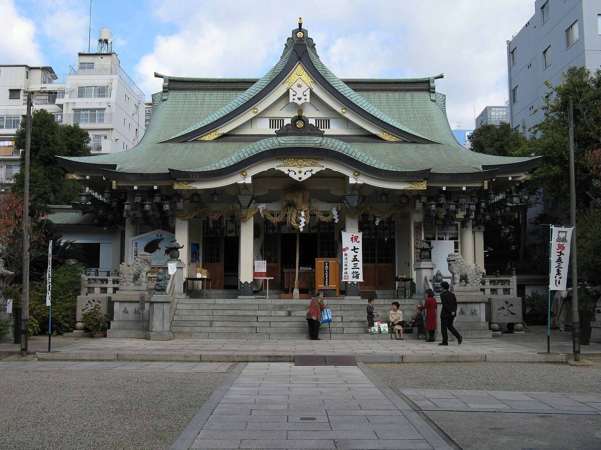

🦁 12m 吞厄巨獅 ✕ 大國主神社種錢招財 ✕ 法善寺水掛不動難波道頓堀・金眼巨獅 ✕ 大國主神社種錢 ✕ 水掛不動 ✕ 峽谷花園 O 型環線
起訖樞紐：地鐵御堂筋線「難波站」5 號出口（梅田搭御堂筋線 8 分鐘直達）。
適合情境：想感受道地大阪市井熱鬧氣氛、去厄運招大財、打卡震撼巨型地標、吃現炸串炸與紅豆湯。
📜 歷史典故、神道去厄招財傳奇與文學故事
• 難波八阪神社 12m 金眼獅子殿（除厄・勝運）：建於仁德天皇時代，主祭斬殺八岐大蛇的「素盞嗚尊」。高 12 公尺的巨型金眼獅子殿，大張的巨口象徵「一口吸納世間所有災厄與晦氣，招來商貿繁榮與學業勝運」。
• 敷津松之宮・大國主神社（關西第一金運「種錢」）：相傳神功皇后三韓征伐返國時在此立下三棵松樹為記，境內供奉日本七福神之首的「大黑天（大國主命）」。社務所提供加持過的「種錢 (種銭 たねせん)」（約 500 円），放入錢包作為生生不息的財富種子，「以錢生錢、財源廣進」，是大阪企業家與投資人必備的開運寶物。
• 法善寺「水掛不動」滿身青苔的由來：1637 年建立的淨土宗古剎。1945 年空襲後唯獨不動明王石像完好倖存。戰後婦人合掌澆水祈願奇蹟成真，演變為信徒紛紛舀水澆淋，使石像覆滿厚厚綠色青苔，撫慰無數人心。
• 織田作之助《夫婦善哉》：1883 年創業老舖，一份熱紅豆湯圓分成兩小碗佐鹹昆布，象徵「夫妻兩人各一碗，缺一不可；甜後微鹹，甘苦共嚐」。
🗺️ 順向 O 型動線分步指引 (不走回頭路)
地鐵御堂筋線「難波站」5 號出口出站，南向步行 6 分鐘進入靜謐小巷。站在高達 12m 的金眼巨獅殿前拍照，祈求將一切厄運與晦氣吸走！
從八阪神社往南步行 6 分鐘抵達大國主神社：
・參拜大黑天財神爺，撫摸神像祈求財運與事業亨通。
・於社務所求取加持過的「種錢 (種銭)」（500 円），放入皮夾或保險箱內，做為「生生不息的財富種子」！
從大國主神社往北步行 8 分鐘進入 難波 Parks：登上美國建築大師設計的 8 層高空大峽谷空中花園木棧道，吹晚風看落日，享受繁華都市中的立體綠洲。
穿過難波 Walk 步行 7 分鐘進入江戶石板老街「法善寺橫丁」：
・向滿覆綠色青苔的「水掛不動明王」舀水澆淋祈願。
・【晚餐】串の坊 本店 (Kushinobo)：1950 年創業老舖，吧檯現炸時令黑毛和牛、海老與蘆筍串，酥脆不油膩。
・飯後品嚐旁邊的「夫婦善哉」熱紅豆湯圓佐鹹昆布。
步行 3 分鐘抵達道頓堀河畔，打卡固力果跑跑人霓虹招牌夜景。
散步結束後，從難波 14 號入口進入地鐵難波站，搭御堂筋線 8 分鐘直回梅田 Granvia 飯店休息！
⚠️ 難波・道頓堀・神社實戰避坑 ✕ 社群真實負評 8 大盤點
• 真實負評：住宅區迷你神社，除正面拍巨獅頭外無其他景點，10分鐘拍完；下午 15:30 太陽在獅子後方「大逆光臉全黑」，8月盛夏無樹蔭極曬；觀光客排隊塞滿。
• 💡 實戰破解：抱持「快閃 10~15 分鐘打卡」心態，下午拍照手機開啟 HDR / 人像補光模式，拍完即走不留戀。
• 真實負評：社務所賣「種錢」16:00 左右即拉鐵門！若先逛八阪神社再過來極易吃閉門羹；偶有缺貨，大太陽下柏油路步行 1.5km。
• 💡 實戰破解：若必求種錢，一到難波先直奔大國主（16:00 前完成），社方特別叮嚀「包裝紙絕對不可拆開，拆了就失效」。
• 真實負評：6F~8F 露天梯田吸熱無冷氣，8 月下午走階梯汗流浹背；仿大峽谷曲線動線如迷宮，上下爬樓梯費腿力。
• 💡 破解對策：建議 18:00 黃昏起風後再上頂樓空中花園；若下午抵達直接在室內商場吹冷氣橫穿。
• 真實負評：排隊舀水水氣蒸騰有青苔潮濕味；不動尊前地面常年積水極其濕滑，穿平底休閒鞋容易打滑。
• 💡 實戰破解：穿著防滑平底鞋，避開積水濕滑石面；傍晚點燈後氣氛最為幽靜古樸。
• 真實負評：紅豆湯甜度極高（像糖漿），店家規定每人必須各點一份（無法兩人分食），一份 800+ 円偏貴，純賣名氣故事。
• 💡 實戰破解：視為「買名氣故事與夫妻和睦祝福」的文化體驗，非螞蟻人可搭配附贈鹹昆布交替吃。
• 真實負評：非新世界平價串炸，若點師傅一直炸的 omakase，結帳人均常達 6,000~8,000 円；老店吧檯通風有限，油煙味較重。
• 💡 實戰破解：點固定串數的「套餐 (Course)」以嚴格控制預算；避開用餐尖峰時段。
• 真實負評：觀光客密度破表、吵雜寸步難行；夜間地面垃圾多，旁邊小巷有居酒屋拉客托。
• 💡 實戰破解：橋上拍完跑跑人 5 分鐘快閃打卡；嚴正拒絕任何陌生側巷拉客搭訕。
• 真實負評：HARUKA 停靠 B2 梅北月台，走到南館 Granvia 大廳需走長連通道 8~12 分鐘，第一天搭機後易累。
• 💡 實戰破解：沿著「JR 大阪站南館 / 連絡橋口」電梯指標直上大廳，不隨意亂拐避免迷航。
💬 社群旅人實戰評價精選
「這條動線簡直是大吉大利的完美組合！先去八阪神社讓巨獅把過去的厄運吞掉，再走幾分鐘到大國主神社求『種錢』放在皮夾裡，接著去法善寺向水掛不動澆水祈願吃串炸，整段路順暢無比，完全不走回頭路！」—— 背包客棧大阪版精華